This page contains a lot of what I know about Microsoft Excel. There is so much to do with Excel that it's pretty difficult to put everything I know down, but I'll do my best. I have included screenshots and animated shots to help explain what I'm doing. There are links along the side that will jump you to specific spots if you know what you're looking for. If not, you can just start reading. Enjoy!
Basics
To begin with, Excel uses a grid-based system for storing data. (See Figure 1.) The columns, going across the top as letters, begin at "A" and continues up to "XFD". Once the letters reach "Z", they restart with "A" as the first and the second set of letters incrementing. For example, After "Z", it follows: "AA", "AB", "AC", etc. The rows, going down the left side as numbers, begin at "1" and continue up to 1,048,576.
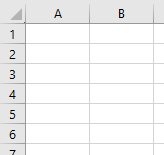
Excel grid
Functions
I'm going to go over some essential functions for working with Excel. I'll start from some of the more simplier ones and progress towards more difficult ones. All functions are preceded by an equal sign ("="); all the examples I have here will include the equal sign in the code. You also may notice that some examples have the functions in lowercase and others have the function in uppercase. It doesn't matter which way you type it; Excel generally converts it all to uppercase.
sum
The first function is the sum function. The sum function does exactly what it's title implies: it sums a range of values. The function code is as follows: =sum(A3:A4). The range is specified with the starting cell on the left of the colon and the ending cell on the right side. (See Figure 2.) You can also specify individual cells with a comma (e.g. =sum(A3:A4,A5)). (See Figure 3.) The range (and individual cells, if you've specified them) will light up in different colors as they are selected in the function.
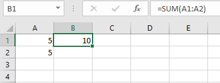
sum function (range)
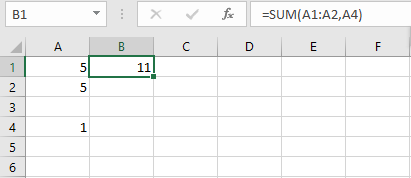
sum function (range & additional cell)
today
The today function returns today's date as an Excel-formatted date (i.e. really just a number (See Figure 4.) that, if formatted properly, represents a date (See Figure 5.). This function is fairly simply and straightforward. There's nothing fancy, really, that you can do with it; it is really useful when creating longer functions for company payroll sheets, etc. The function code is as follows: =today().
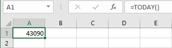
today function (formatting removed)
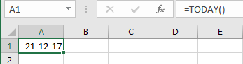
today function (formatting kept)
average
Commonly in Excel, one needs to know the average of a set of numbers. One can achieve this without using the average function (e.g. =SUM(A1:A4)/COUNT(A1:A4)), but it can become difficult when you need to change the range or otherwise update the function. Luckily, the developers of Excel built in a function for the average; the code for this function is as follows: =average(A1:A4).
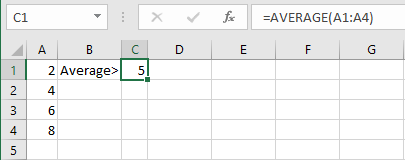
average function
max
When looking for the greatest number in a given set of numbers, the max function comes in quite handy. This function goes through every number in the set and determines what the greatest number is. The function updates itself everytime the workbook refreshes. The code for the max function is as follows: =max(A1:A7).
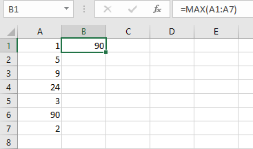
max function
min
The min function does exactly the oposite of the max function (go figure, right?). As in the max function, a set of numbers is defined. Those numbers are then searched and the least greatest is found and returned. The code is as follows: =min(a1:a10).
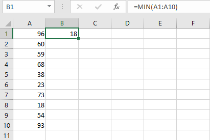
min function
if
The conditional function in Excel is exactly the same in Excel as in any other programming language. If the equation specified is true, it will return the first value. If it evaluates to false, then the second value is returned. In figure 9, the equation 1 + 1 = 2 evaluates to true (at least I hope), so the first value (cell A1) is returned. If math were broken and 1 plus 1 did NOT equal 2, then the second value (cell A2) would be returned. Any Boolean equation can be entered into the if function. The code for the if function is as follows: =if(boolean expression).
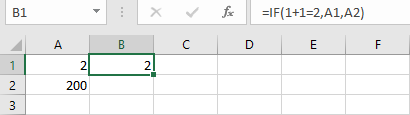
if function
count
This next function--count--counts up the number of cells in a given range that includes numbers. (Note: it ignores letters, punctuation, and other characters. It only counts integers.) In Figure 10, I put six filled cells in the function range, but only three of those cells are actually counted (even though all six are filled). Only cells A1, A2, and A4 are counted (because they are integers); the other three cells are disregarded by the function because they include letters ("a" and "d") and punctuation (a double quotation mark).
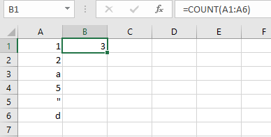
count function
Formatting
Have you ever seen the movie Megamind? It a great movie about a villian turning into an unlikely hero. At one point, the villian-turned-good-guy (Megamind) is fighting the good-guy-turned-bad-guy (Titan) (Confusing, I know; just go watch the movie.). Titan is telling Megamind that the town isn't big enough for two supervillians. Megamind responds by telling Titan that he (meaning Titan) is a villian, just not a super one. Titan questions what the difference is and Megamind responds (with a lot of flair, I might add): Presentation! The presentation of data is critical. Too much presentation and people are overwhelmed. Yet too little presentation and people start falling asleep. Now, this isn't a tutorial on boardroom and office presentations, but a lot of the same principles apply. The biggest one: don't overdo it!
Font
Since the font is how the user will be reading your data, it's important to know how to format it. There are many different ways to change this aspect of the presentation of the data: you can change the font type, change the font color, the size, etc. In most Excel setups, there is a menu bar already displayed that allows for the changing of cell fonts. (See Figure 11.) The menu itself is fairly selfexplanitory, but I'll run over each button anyways.
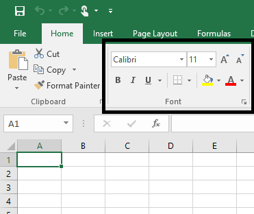
Excel Font Menu
The first dropdown box (that says "Calibri" in the figure) is the font type selection. Once you click it, a selection of different font type sets is revealed. Normally, I don't change the font from the default setting because I like the look of Calibri in Excel.
The second dropdown box is the font size. For most data I leave this alone as well. Eleven is a good, readable size for me and the people who view my spreadsheets.
The two buttons directly to the left of the font size box work the same as changing the font size with the dropdown box. The "A" with the upward facing arrow increases the font size by one; whereas the "A" with the downward facing arrow decreases the font size by one.
The capital "B" on the second row bolds the text of your cell.
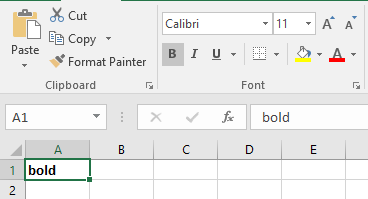
Cell Contents Bolded
The "I" next to the "B" will emphasize or italicize the cell text.
The paint bucket will fill the cell with the selected color. When the small arrow to the right is pressed, a color-picker will appear (see Figure 16). If the paint bucket itself is clicked, the color of the underline will be applied (as in Figure 15).
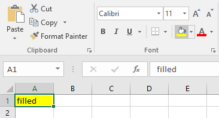
Cell Contents Filled with the default color
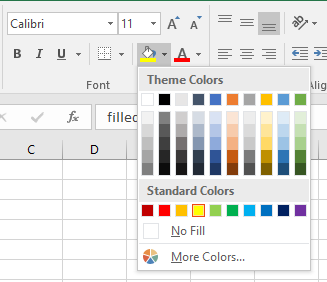
Color Picker for Cell Color Filling
In Figure 11, the "A" with the red underline is for the font color itself. This button works similar to the paint bucket. The arrow generates a color-picker (see Figure 18) and the clicking of the button itself yields the color of the underline (see Figure 17).
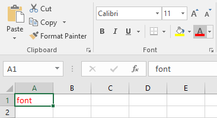
Cell Font Colored with the default color
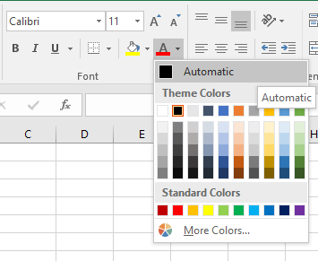
Color Picker for Font Coloring